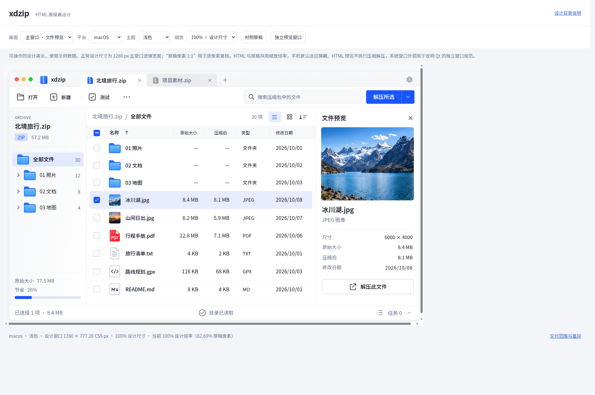
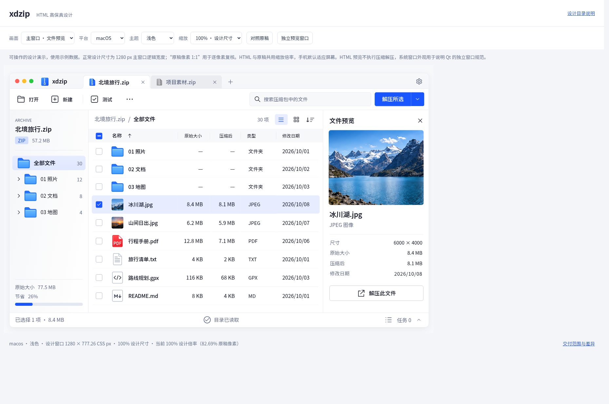

xdzip 画布滚动条修复
固定画布的根文档不再增加滚动条。文件列表、长属性和操作窗口仍按内容滚动；手机在正常设计尺寸下仍可横向平移。
修复后常规展示
真实经典滚动条开启，1858 × 1234 浏览器视口，正常设计尺寸。
负向用例：移除修正规则

同一版本将画布视口缩小 1 px，并移除嵌入规则以复现问题。这是回归用例，不是历史截图。
相同条件：保留修正规则

保持相同 1 px 容错条件，根滚动条占位为零，窗口四边完整可见。
复核说明
，
专项测量
，
尺寸与原稿对照